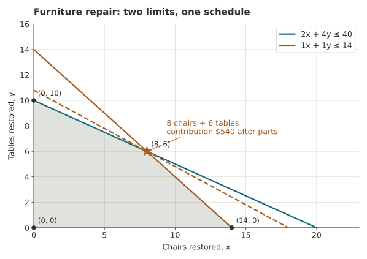

Restoring furniture with limited time
A neighborhood repair cooperative must plan volunteer hours and pickups while restoring chairs and tables for resale.
Giving donated furniture another useful life
A neighborhood repair cooperative restores donated chairs and tables so local residents can buy affordable furniture. Volunteers have forty restoration hours available this week. A chair takes two hours to repair and a table takes four. A pickup partner can collect fourteen finished pieces this week, and each piece needs one pickup appointment. Let \(x\) count chairs restored and \(y\) count tables.
After buying replacement parts, the cooperative expects to have $30 remaining from each chair and $50 from each table to support its work. Let \(P=30x+50y\) be the week's total contribution after parts. This simplified model assumes that there are enough donations to restore and enough customers for the finished items. Wages or fixed overhead would have to be accounted for in a full financial plan.
| Resource or value | Per chair | Per table | Available / goal |
|---|---|---|---|
| Restoration labor | 2 hours | 4 hours | 40 hours |
| Pickup appointments | 1 | 1 | 14 appointments |
| Contribution after parts | $30 | $50 | Maximize total contribution |
Each chair or table is one complete item. We first use a continuous graph to understand the feasible region, then make a recommendation in whole numbers.

Which repairs can the cooperative actually complete?
The group has forty restoration hours, so \(2x+4y\leq40\). Divide by two to find the equivalent boundary \(x+2y=20\). It shows how chairs and tables trade off in the repair schedule. The fourteen-item pickup limit may rule out an intercept, so check both limits before listing the feasible corners.
Repair hours are only part of the schedule
The cooperative is considering two lists of donated items. Plan A restores eight chairs and five tables, represented by (8,5). Plan B restores ten chairs and five tables, represented by (10,5). Check the restoration hours and the number of pickup appointments for each before deciding whether either list is realistic.
Plan A: (8,5)
Plan B: (10,5)
Which repairs support the cooperative best?
Restoring a table brings in more after parts than restoring a chair, but a table takes twice as many repair hours. A chair is quicker to restore, though both items need a pickup appointment. Compare the feasible corners to see how these two limits affect the group's potential contribution.
What if volunteers have more hours or pickups increase?
The earlier questions used this week's original limits. Now imagine that more volunteers offer their time, that the pickup partner can carry more items, or that resale values change. Try one change at a time and watch how the best schedule responds.
Adding volunteer hours can expand the set of repair schedules, while adding pickup appointments removes a different limit. Changing the money earned from each item leaves the possible schedules alone but may change which one best supports the cooperative.
Your recommendation to the repair cooperative
Recommend a mix of chairs and tables for this week, and state the total contribution after parts. Support the recommendation by checking both volunteer hours and pickup appointments, and compare it with another feasible schedule. What would the cooperative need to find out about donated furniture, customers, or volunteers before using this plan in real life?
A useful recommendation gives a schedule and its contribution, demonstrates that it fits the available hours and pickups, and mentions at least one assumption that would need checking.